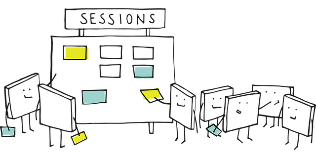

日頃は、40才から65才の方の特定保健指導のため、
職場の健康診断の結果を元に、対象になった方の企業や庁舎などで訪問指導を。
また、60才から75才の退職後の国民健康保険加入の方の糖尿病重症化予防プログラムのため、
市町村の健康保健センターにて訪問指導をしております。
今回、コロナ・ウィルスの流行に伴い、全ての訪問業務がストップした2020年３月から、
N予備校の無料開放を知って、プログラミング入門コースの勉強を始めました。

そして、夏の動くWebページ・コンテストに参加するにあたり、
管理栄養士かつ地域糖尿病療養指導士が運営する設定として
架空のサイト「hiccup」を作ってみることにしました。
７月から業務が再開し、仕事でも使っていけるように、今後も作り込んでいきたいと思います。
貴重な勉強の機会を戴きましたN予備校の先生方、スタッフの皆様に感謝します。